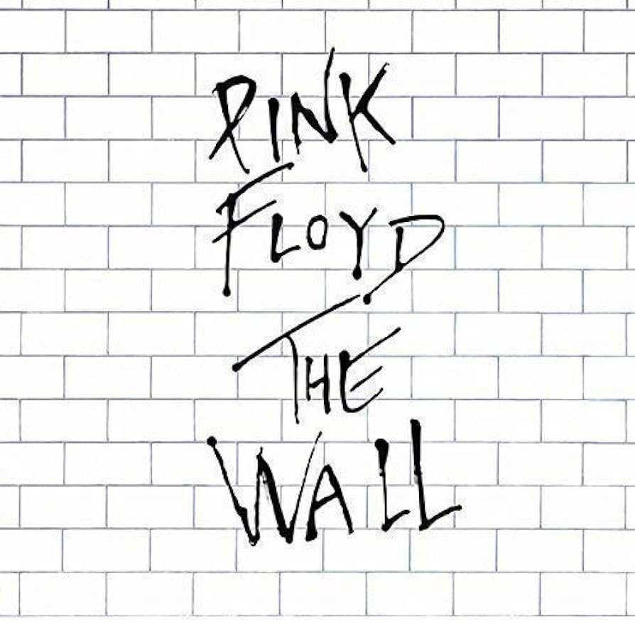
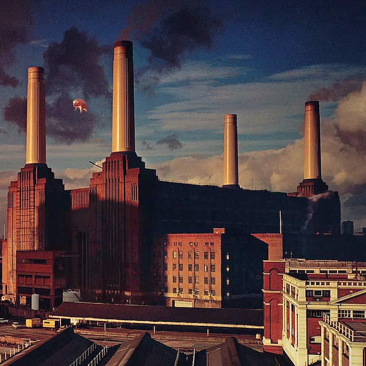
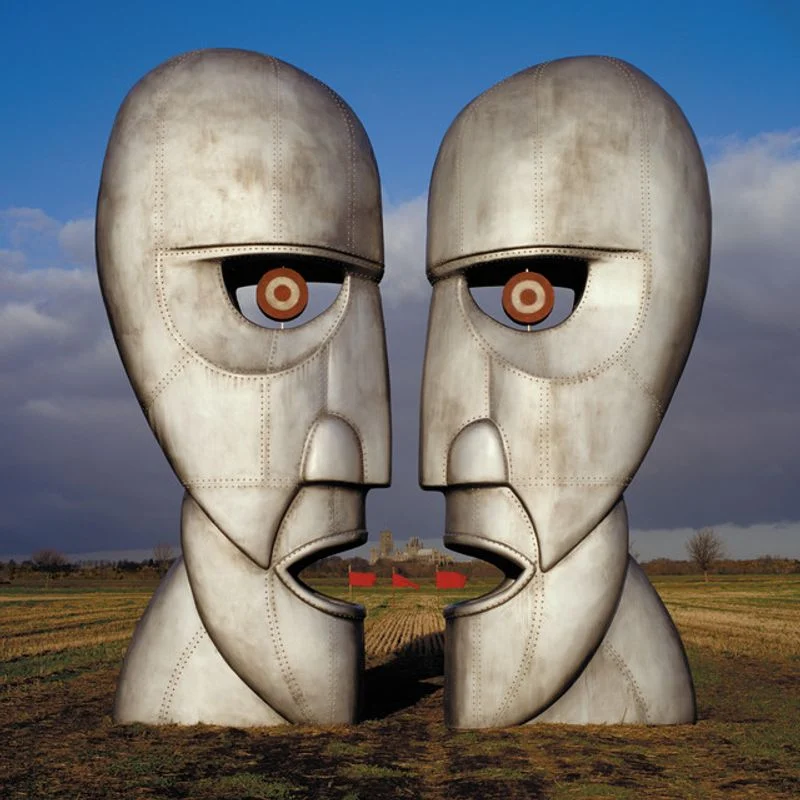
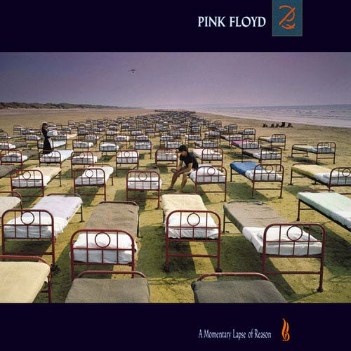
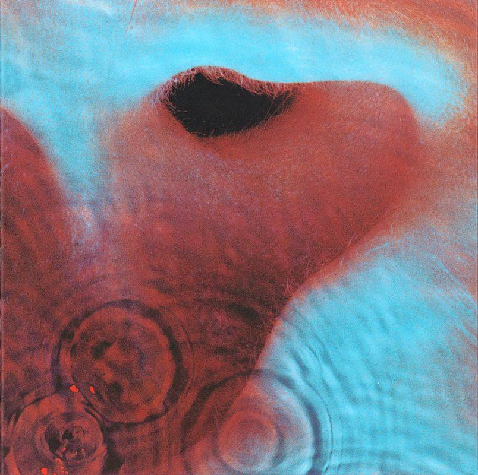
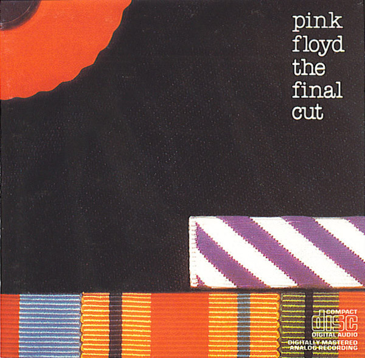

Studio albums
- The Piper at the Gates of Dawn (1967)
- A Saucerful of Secrets (1968)
- More (1969)
- Ummagumma (1969)
- Atom Heart Mother (1970)
- Meddle (1971)
- Obscured by Clouds (1972)
- The Dark Side of the Moon (1973)
- Wish You Were Here (1975)
- Animals (1977)
- The Wall (1979)
- The Final Cut (1983)
- A Momentary Lapse of Reason (1987)
- The Division Bell (1994)
- The Endless River (2014)
Best selling albums
VII

1973
© 43,300,000
XI
1979
© 31,300,000
IX

1975
© 22,300,000
X
1977
© 12,150,000
XIV
1994
© 11,550,000
XIII
1987
© 10,200,000
VI
1971
© 7,950,000
XII
1983
© 6,800,000
Pink Floyd's legacy spans an incredible 47 years, during which their 15 studio LPs collectively sold an astonishing 169.6 million copies. This remarkable feat surpasses the Beatles' record of 160.65 million studio album sales.
by Chartmasters